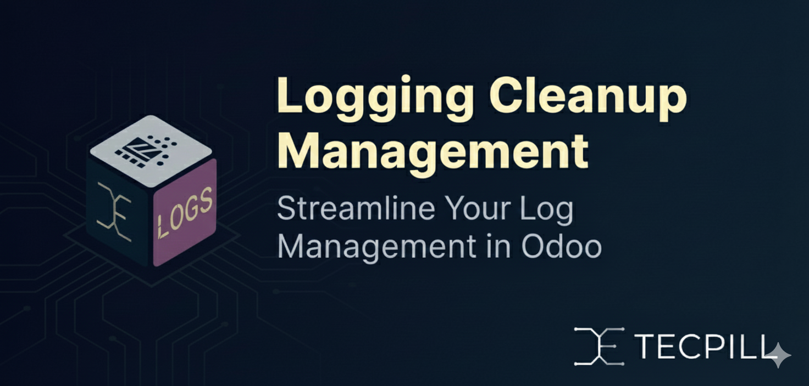
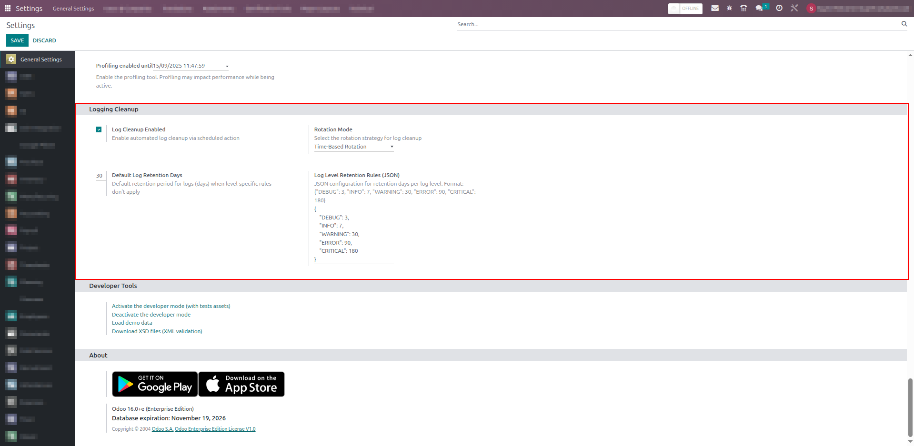
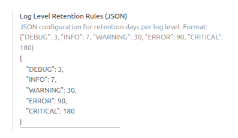
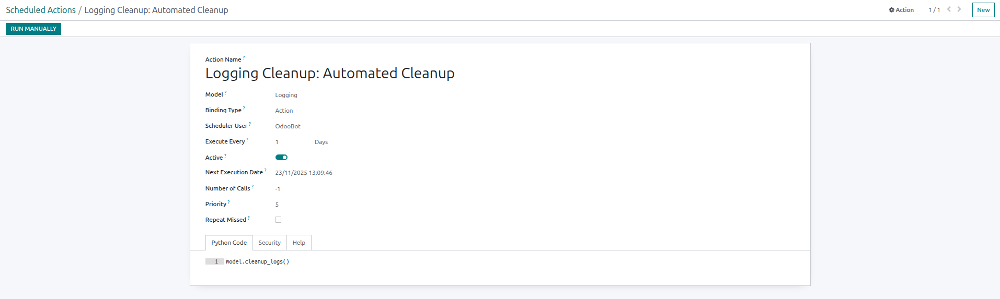
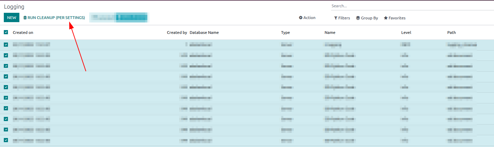

Credits
Authors:
Sayed Mohamed Ebrahim
Technology Pill Business Solution

Configurable log retention policies, cleanup rotation modes, and manual cleanup for ir.logging in Odoo 16.


Main configuration interface

JSON retention rules configuration example

Automated cleanup scheduled action
Installation Steps:
Settings -> Technical -> Logging Cleanup configuration page

Logs list view showing the "Clean Logs Now" button
If you encounter any bugs or issues with this module, please report them on our GitHub repository. This helps us improve the module for everyone.
This module is open source and free for the community. We welcome contributions!
GitHub Repository: https://github.com/Tecpill/technical_os_odoo_apps
For support and assistance, contact us at admin@tecpill.com